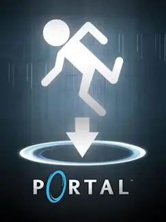

Portal
Portal
Detalles
 |
|
| Tiempo de juego | 28m 26s |
| Última actividad | 11/11/2025 8:15:55 |
| Añadido | 26/4/2025 1:40:24 |
| Modificado | 2/12/2025 23:23:17 |
| Estado de finalización | Jugado |
| Librería | Playnite |
| Fuente | |
| Plataforma | PC (Windows) |
| Fecha de lanzamiento | 10/10/2007 |
| Puntuación de la Comunidad | 86 |
| Puntuación de la Crítica | 80 |
| Puntuación de usuario | |
| Género | Puzzle Shooter |
| Desarrollador | Valve |
| Editor | Electronic Arts Valve |
| Característica | Single Player |
| Enlaces | Steam |
| Tag | |
Descripción
El Desafío Espacial de Aperture Science
Preparate para cambiar tu forma de pensar el espacio. Tenés en tus manos un dispositivo capaz de crear portales conectados entre sí, y estás atrapado en las enigmáticas y estériles instalaciones de un complejo científico. Aquí, la lógica convencional de la física se dobla a tu voluntad, pero no estás solo; una inteligencia artificial con un sentido del humor muy ácido y oscuro te observa y te guía (o quizás te manipula) a través de una serie de pruebas desconcertantes.
Tu desafío consiste en usar estos portales para moverte a través de obstáculos insalvables, transportar objetos, desviar rayos de energía y burlar sistemas de seguridad, todo mediante el pensamiento lateral y la comprensión de cómo la inercia y la gravedad interactúan con los portales. Cada cámara de pruebas es un nuevo acertijo que te obliga a reconfigurar tu percepción del espacio tridimensional.
Es una experiencia de puzles en primera persona brillantemente innovadora, compacta pero increíblemente impactante. Combina una jugabilidad única con una atmósfera minimalista que gradualmente revela un misterio más profundo y la presencia inolvidable de esa IA parlanchina que te mantiene al borde entre la risa y la inquietud. Si buscás un juego que te desafíe la mente de una forma totalmente original y te ofrezca una narrativa sutil pero cautivadora, este es un viaje que no te va a defraudar. Vas a aprender que los pasteles a veces son mentira.